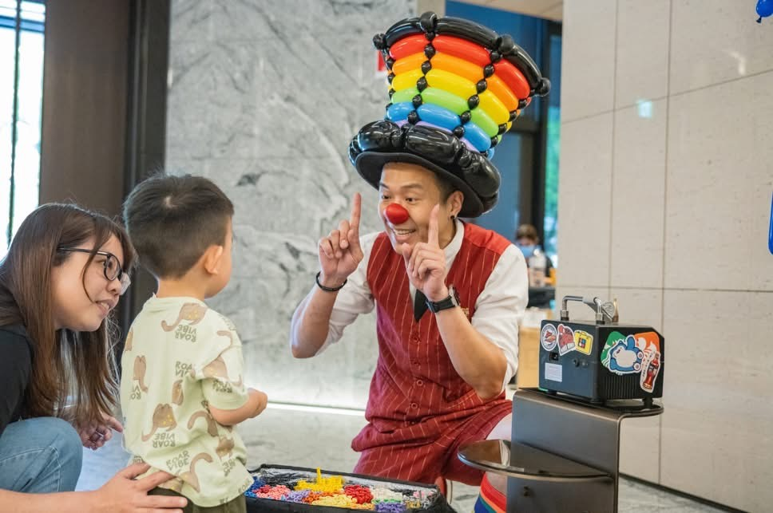

氣球大叔 Sony × 惠宇謙和春季市集｜竹北高鐵前市集互動紀實
社區美學市集 × 互動氣球魔術｜在春風徐徐的午後，為高品質社區點亮童心奇蹟
📍 地點：惠宇謙和市集（新竹高鐵站前）
竹北質感社區盛事：惠宇謙和春季市集
五月的竹北高鐵區，展現了生氣勃勃的都會活力。指標性建商 惠宇營建 於「惠宇謙和」基地前打造了一場極具生活質感的春季市集。氣球大叔 Sony 獲邀為這場市集注入靈魂，結合美食攤位與文創設計，透過氣球魔術為這場社區聚會創造了最強的人氣焦點。

笑聲連連的親子舞台：沒有距離的魔術驚喜
在強調「社區凝聚力」的惠宇謙和市集中，Sony 特別安排了高頻率的即興互動橋段。從經典的 大型光譜氣球帽 亮相，到邀請孩子上台參與魔術挑戰，每一環節都讓在場的菁英家庭們頻頻舉起手機紀錄。這不僅是表演，更是一場三代同堂、共享天倫的質感體驗。
- ✨ 高辨識度引流： 彩虹氣球造型與活潑律動，瞬間成為市集最熱門的打卡地標。
- 🤝 深度社區互動： 專業魔術師展現親和力，拉近鄰里間的距離。
- 🎨 場景完美契合： 演出風格融入惠宇謙和的高質感空間，提升活動整體的層次感。
結語：竹北社區與建案活動的專業首選表演者
氣球大叔 Sony 具備豐富的 竹北豪宅社區（如惠宇、國泰、坤山等） 服務經驗。我們深知高品質建案活動對於氣氛營造與品牌形象的堅持。不論是 春季市集、入厝派對、家庭日 或是 公設啟用活動，Sony 都能為您量身打造最具質感的娛樂策劃。
"現場氣氛真的太棒了！氣球大叔的彩虹帽是全場孩子的偶像，讓這場社區市集變得非常生動有溫度。"
💡 關於竹北市集氣球魔術表演的常見問題
- Q: 在竹北地區舉辦社區市集或建案活動，邀請氣球大叔表演有什麼優勢？
- A: 氣球大叔 Sony 擁有豐富的竹北豪宅社區與高品質建案市集服務經驗，深知如何拿捏現場氣氛。透過極具親和力的互動魔術秀與高辨識度的彩虹氣球造型，能迅速吸引家庭客群駐足，有效延長參與者在市集的停留時間，為活動創造高人氣與熱烈迴響，提升品牌質感。
- Q: 市集空間通常比較開放且人潮走動頻繁，魔術表演的場地需要如何準備？
- A: 完全不需要擔心場地限制！市集表演最大的特色就是極高靈活性。氣球大叔 Sony 備有專業行動擴音設備，只需一個約 2x2 公尺的腹地，就能將角落轉換成充滿歡笑的微型劇場。開放空間反而能吸引外圍民眾圍觀，讓市集氣氛更加沸騰，聚客效果極佳。
- Q: 表演過程中的造型氣球發送，會不會造成現場秩序混亂？
- A: 絕對不會的。氣球大叔在表演中會巧妙融入排隊與趣味搶答的機制，並透過專業豐富的控場技巧，引導孩子們守秩序地參與互動。除了確保每位熱情參與的小朋友都能獲得精美的造型氣球外，也能讓一旁的家長安心拍照，讓市集活動從頭到尾都保持高質感的歡樂體驗。
🏢 正在為社區市集或品牌建案規劃聚客活動嗎？
讓主辦單位輕鬆創造人氣與質感！除了受歡迎的氣球魔術，大叔更提供專為市集與品牌量身打造的整合企劃：
- 👉 需要高質感的市集聚客與互動流程？ 請參考：企業家庭日 / 品牌活動整合方案
- 👉 只想單純預約超吸睛的舞台互動秀？ 請參考：兒童互動魔術表演介紹
📅 本文整理於 2025-05-12，完整紀錄竹北惠宇謙和市集真實活動現場氛圍。